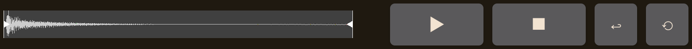

再生ビュー
再生ビューは波形ビューの下に配置され、音声データ全体の俯瞰表示と、再生・停止・シークなどの再生操作を行います。

表示内容
- 常に全体を表示：波形ビューを拡大・スクロールしていても、再生ビューは常に音声データの先頭から末尾まで全体を表示します。
- 共通の配色：背景、選択範囲の背景、波形、開始位置・終了位置・再生位置の色は波形ビューと同じです（目盛り線は描きません）。
- ステレオ表示：上部バーの L / R スイッチの状態に関わらず、L と R を重ねて表示します。
再生ボタン
再生ビューの右端には 4 つのボタンが並んでいます。
| ボタン | 名前 | 動き |
|---|---|---|
| ▶ | 再生 | 選択範囲を再生します。停止中なら停止した再生位置から再開し、再生中に押すと開始位置から再生し直します（押した瞬間に反応します）。 |
| ■ | 停止 | 再生を停止します。再生位置はその場に留まります（押した瞬間に反応します）。 |
| ↩ | 巻き戻し | 再生位置を開始位置に戻します。再生中に押すと、そのまま開始位置から再生を続けます（押した瞬間に反応します）。 |
| ⟲ | リピート | 押すたびにオン／オフを切り替えます。オンのときはボタンが緑色になり、終了位置に達すると開始位置に戻って繰り返し再生します。 |
タッチ操作（シーク・バーの移動）
- シーク（再生位置の移動）：再生ビューをタップまたはドラッグすると、再生位置をその位置へ動かします。動かせる範囲は開始位置〜終了位置の間です。再生中にシークすると、そのまま新しい位置から再生を続けます。
- 開始位置・終了位置のバーをドラッグ：波形ビューと同様に、開始位置・終了位置のバーをドラッグして動かせます。
- 重なっているときの優先順位：通常は再生位置の操作が優先されますが、左右の余白を触ったときは端にある開始位置・終了位置のバーが優先してつかめます。
再生の細かい動き
- 再生範囲の反映：再生中に開始位置・終了位置を動かしても、すぐには再生範囲に反映されません。再生ボタンを操作したとき、またはリピート再生で次の繰り返しを始めるときに新しい範囲が反映されます。
- 再生位置のクリップ：停止中に開始位置・終了位置を動かして再生位置が選択範囲の外に出た場合は、自動的に選択範囲の端へ収められます。
- L / R スイッチとの連動：ステレオ音声では、L / R スイッチでオフにしたチャンネルは無音になります。再生中に切り替えるとリアルタイム（出力バッファ消化後の約 0.1 秒後）に聞こえ方が変わります。
- 自動停止：編集コマンドを実行したとき、設定画面を開いたとき、他のアプリへ切り替えて画面が非表示になったときは、再生が自動停止します。
再生できないサンプリングレートの場合：読み込んだ音声のサンプリングレートが端末のハードウェアで再生できない値のときは、「このサンプリングレートでは再生できません。サンプリングレートを変更すると再生できます。」と表示されます。「全体の加工」の「サンプリングレートの変更」で対応レートに変換すると再生できるようになります。